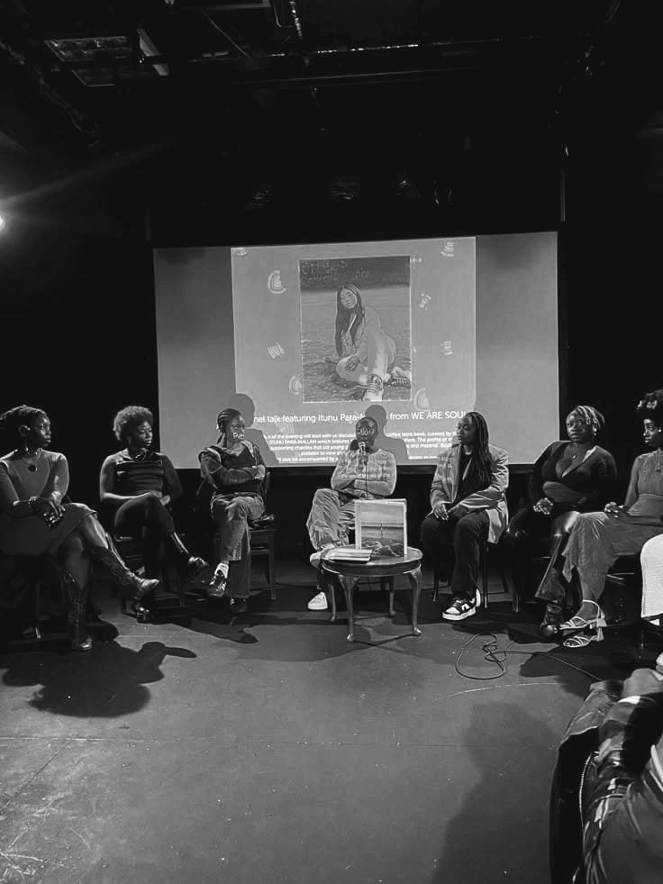
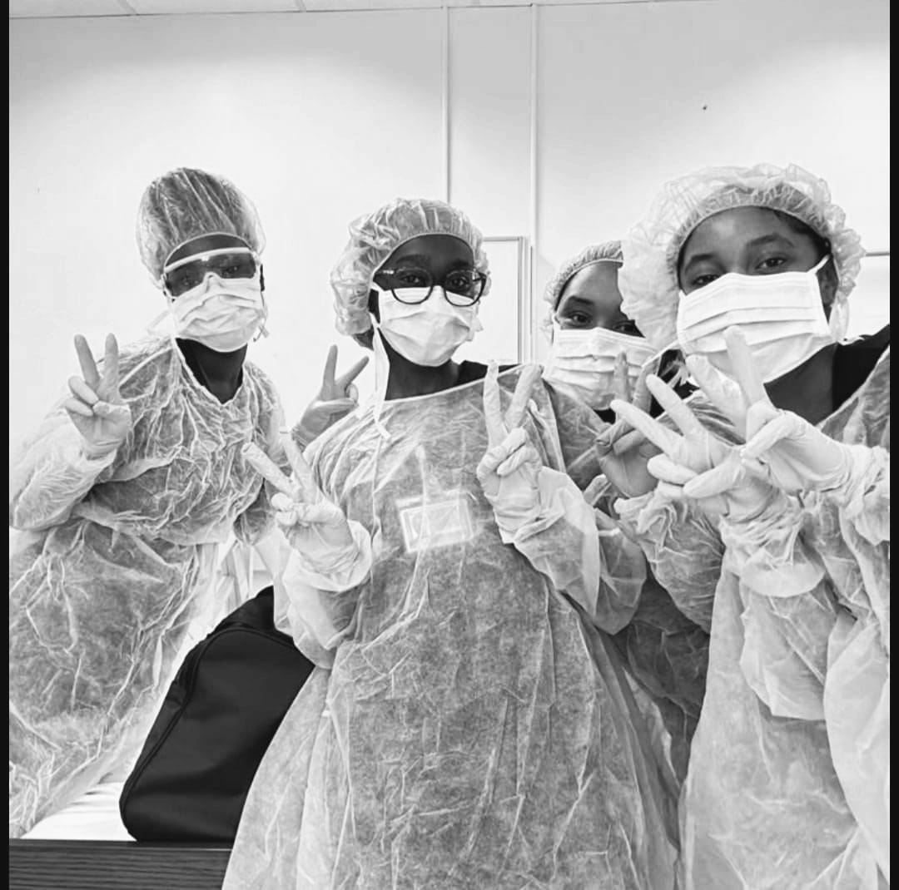

O jornalismo é a profissão que trabalha com informação e comunicação. Quem faz jornalismo aprende a apurar notícias, investigar fatos, entrevistar pessoas, produzir textos, fotos, vídeos e conteúdos digitais.
No curso, o estudante aprende:
Se gosta de descobrir histórias, investigar fatos e estar por dentro do que acontece no mundo, o jornalismo é perfeito. Além disso, permite criatividade na produção de vídeos, podcasts, fotos e conteúdos inovadores.
O curso de Gestão de Empresas ensina a administrar negócios e equipes com eficiência. Você aprende sobre planejamento, finanças, marketing, liderança e inovação.
Benefícios de fazer Gestão de EmpresasIdeal para quem deseja abrir seu próprio negócio, gosta de desafios e de tomar decisões estratégicas. É um curso prático, com muitas oportunidades de estágios e experiências reais.

O curso de Relações Internacionais estuda como países, organizações internacionais e empresas se relacionam no mundo, preparando profissionais para negociar e influenciar decisões globais.
Benefícios de fazer Relações InternacionaisPerfeito para quem gosta de viajar, conhecer culturas e se interessar por política, economia e acontecimentos globais.
O curso de Direito forma profissionais capazes de entender, interpretar e aplicar leis em diferentes contextos da sociedade.
Benefícios de fazer DireitoPara quem gosta de debater, argumentar, defender ideias e garantir justiça, o curso é ideal.
O curso de Comissário de Bordo capacita para garantir a segurança, o conforto e o atendimento aos passageiros durante voos.
Benefícios de fazer AviaçãoCarreira dinâmica para quem gosta de viagens, novas culturas e de ajudar pessoas.
Curso abrangente com diversas especializações, como neurologia, psiquiatria, cardiologia, dermatologia, obstetrícia e muito mais.
Benefícios de fazer MedicinaCurso desafiador e gratificante, que exige estudo contínuo e oferece múltiplas possibilidades de atuação.
Engenharia é um campo vasto, com múltiplas áreas: Civil, Elétrica, Informática, Mecânica, Minas, Química, Florestal, entre outras.
A engenharia sempre foi vista como espaço de inovação e progresso, mas por muito tempo negou a presença de mulheres, sobretudo mulheres negras. No entanto, elas resistiram, conquistaram seu lugar e mostraram que conhecimento e determinação não têm cor nem gênero.
Mary Jackson, primeira engenheira negra da NASA, afirmava: “cada passo dado abre caminho para os que virão depois”.
Aprille Ericsson, engenheira aeroespacial afro-americana, foi reconhecida pela NASA pelos seus feitos em satélites e exploração espacial.
Ursula Burns, primeira mulher negra CEO de uma empresa da Fortune 500, afirmava: “sonhar pequeno ou grande dá o mesmo trabalho, então escolha sempre sonhar grande”.
"Que diremos, pois, à vista destas coisas? Se Deus é por nós, quem será contra nós?"
Romanos 8:31